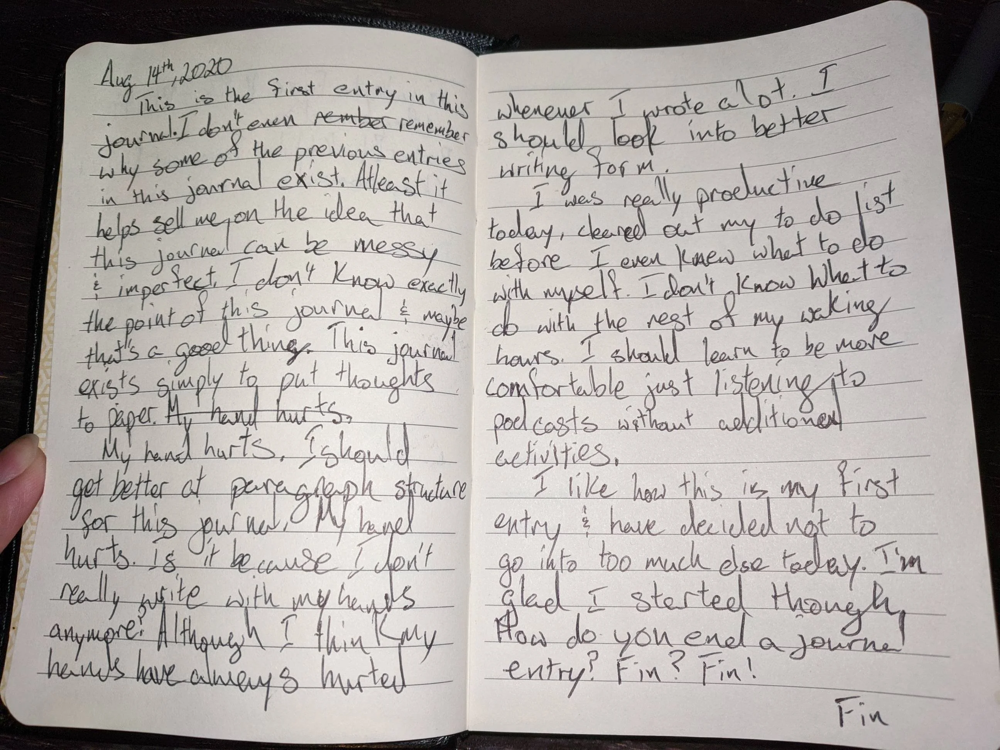

Journaling has benefits!
Journaling is the solution to the physical and mental issues caused by technology. It not only combats the repercussions of over usage, but also encourages skill development and provides individuals with useful tools for their future life, whether in their education or beyond. Below is an exhausted list of the benefits, based on this website.
-
Journalling improves your memory

Writing down your thoughts, ideas, intentions, etc. helps you retain the information better.
-
Journalling fosters inspiration
Journalling is a great way to brainstorm and let your mind wander. More often than not, your imagination can inspire you to do something that was previously unexpected.
-
Journalling reduces anxiety and stress
Writing down worries or anxious thoughts can help relieve stress, and you may even think of a helpful solution.
-
Journalling strengthens written communication skiils
Journalling everyday will give you a chance to work on your writing skills, and in the long term, will improve your written communication skills as you will be able to better express your thoughts and emotions.
-
Journalling boosts confidence
After journalling for a while, you can flip back a few pages and think about how much you've improved and tell yourself to keep up the good work. Maybe you could even laugh at the triviality of your past issues.
-
Journalling helps you ACHIEVE YOUR GOALS!
Goalsetting is a fundamental part of journalling. You can keep track of these goals, and create a to-do list of action items to help you achieve them. Looking back at your completed goals is the best feeling ever!!